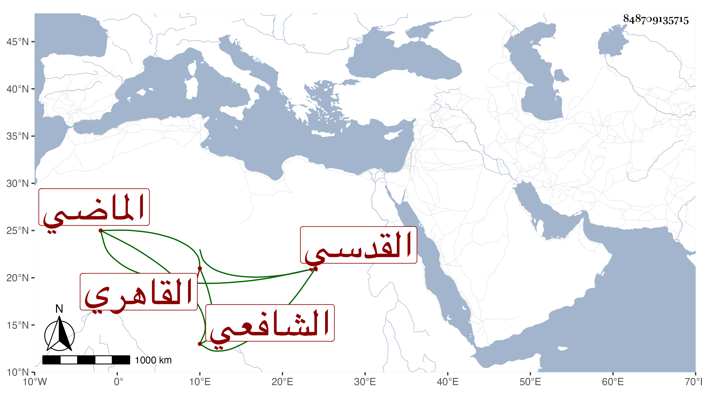

0902Sakhawi.DawLamic.ITO20230111-ara1.EIS1600.848709135715
Biography ID: 848709135715
807
هاجر وتسمى عزيزة - لكنه هجر - ابنة محمد بن محمد بن أبي بكر بن عبد العزيز بن محمد بن إبراهيم بن علي بن أبي الطاعة المكثرة أم الفضل ابنة المحدث الشرف أبي الفضل القدسي الاصل القاهري الشافعي الماضي . ولدت في ربيع الأول سنة تسعين وسبعمائة بعد وفاة أخت لها كانت تسمى باسمها ولذا ميزت هذه بالاسم الثاني ، اعتنى بها أبوها فأحضرها وأسمعها الكثير جدا من عوالي الاجزاء والمشيخات والاربعينات والفوائد والكتب ولكن غاب عنا حصره وحصلت منه بالتتبع جملة ، وصارت بأخرة أسند أهل عصرها وتزاحم عليها الطلبة وكنت ممن حمل عنها قديما أشياء قليلة استغناء عنها خصوصا وقد كانت على نمط كثير من العجائز في عدم التحجب ونحوه ثم حسن حالها وقرأت عليها سائر ما وقفت عليه لأجل الولد وغيره ، ولشدة فاقتها لم تكن تمتنع من تناول ما ترتفق به في معيشتها بل ربما طلبت المزيد ، ومن شيوخها بالسماع أو الحضور التنوخى والامدي والابناسي والشهاب بن الكشك وابن المنفر والسويداوي والولي العراقي وأبوه الزين وابن بنين والمجد إسماعيل الحنفي والزين المراغي والشرف أبو بكر بن جماعة والزين أبو بكر النشائي وسارة ابنة السبكي وستيته ابنة ابن غالي وابن الشيخة وابن الفصيح والحلاوي والجمال بن مغلطاي والصردى والهيثمي وابن أبي المجد والبلقيني وابن الملقن والكومي وفاطمة ابنة عمر المدنية والصدر المناوي والشمس الاذرعي وأبو على المطرز والشمس الكفر بطناوي ومحمد بن حيان بن أبي حيان وابن الميلق وعزيز الدين المليجي والشمس امام الصرغتمشية ووالدها والشرف بن الكويك والصلاح الزفتاوي والغماري والتاج المليجي ومريم الاذرعية وناصر الدين الكناني ، وبالاجازة ابن صديق وجلال الخجندي وابن زريق والبهاء عبد الله الدماميني والعلاء بن السبع والشمس العسقلاني والتقي بن حاتم والعز بن الكويك والبدر بن أبي البقاء والغياث العاقولي والصلاح البلبيسي وبان يس الجزولي والمجد اللغوي ونافع الفيشي وخلق من أماكن شتى وقد يكون لها سماع أو حضور من بعضهم ، ماتت في سادس المحرم سنة أربع وسبعين بالبيمارستان المنصوري رحمها الله وعفا عنها .
